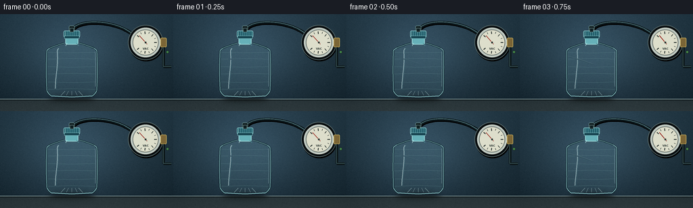
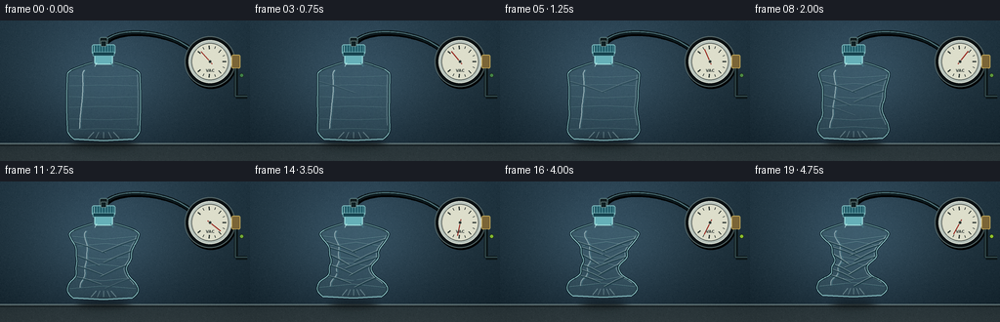

CODING AGENTS AS PIXEL WORLD MODELS
traex/GPT-5.6-Sol · mechanics_0023
点击播放 · 原生 RGB 像素
逐轮保存的候选
回放视频、检查图与代码变化。
每份候选均可单独播放。实际图片检查记录在下方工具轨迹中。
候选 01播放与检查图
点击播放 · 原生 RGB 像素


展开代码变化
--- 上一保存版本
+++ 本次保存版本
@@ -0,0 +1,284 @@
+from pathlib import Path
+import math
+import numpy as np
+from PIL import Image, ImageDraw, ImageFilter, ImageFont
+import artifact_io
+
+# Deterministic, fully procedural text-to-video render.
+CASE_DIR = Path(__file__).resolve().parent
+W, H, N = 256, 144, 20
+S = 4
+SW, SH = W*S, H*S
+rng = np.random.default_rng(23017)
+
+
+def sc(v):
+ return int(round(v*S))
+
+def pts(seq):
+ return [(sc(x), sc(y)) for x, y in seq]
+
+def smoothstep(x):
+ x = min(1.0, max(0.0, x))
+ return x*x*(3.0 - 2.0*x)
+
+def bezier(p0, p1, p2, p3, count=60):
+ out=[]
+ for q in np.linspace(0,1,count):
+ a=(1-q)**3; b=3*(1-q)**2*q; c=3*(1-q)*q*q; d=q**3
+ out.append((a*p0[0]+b*p1[0]+c*p2[0]+d*p3[0],
+ a*p0[1]+b*p1[1]+c*p2[1]+d*p3[1]))
+ return out
+
+# Fixed photographic background: cool laboratory wall and a matte steel bench.
+yy, xx = np.mgrid[0:SH, 0:SW]
+xn, yn = xx/S, yy/S
+wall = np.zeros((SH,SW,3), dtype=np.float32)
+wall[:,:,0] = 23 + 14*(1-yn/H) + 5*np.exp(-((xn-112)/95)**2)
+wall[:,:,1] = 39 + 19*(1-yn/H) + 7*np.exp(-((xn-112)/90)**2)
+wall[:,:,2] = 48 + 22*(1-yn/H) + 10*np.exp(-((xn-112)/85)**2)
+# Soft pool of light behind the specimen.
+pool = np.exp(-(((xn-108)/105)**2 + ((yn-59)/70)**2)*1.6)
+wall += pool[:,:,None]*np.array([16,22,25], dtype=np.float32)
+# Bench at y=126 with brushed horizontal falloff.
+bench = yn >= 126
+wall[bench,0] = 43 + (yn[bench]-126)*0.34
+wall[bench,1] = 55 + (yn[bench]-126)*0.32
+wall[bench,2] = 59 + (yn[bench]-126)*0.30
+# Subtle fixed texture avoids temporal shimmer.
+noise_small = rng.normal(0, 1.0, (H,W))
+noise_big = np.array(Image.fromarray(np.uint8(np.clip(noise_small*12+128,0,255))).resize((SW,SH), Image.Resampling.BICUBIC), dtype=np.float32)-128
+wall += noise_big[:,:,None]*0.11
+# Vignette.
+rad = ((xn-W/2)/(W*.68))**2 + ((yn-H/2)/(H*.78))**2
+wall -= np.clip(rad,0,1.4)[:,:,None]*np.array([8,9,9])
+BASE = Image.fromarray(np.uint8(np.clip(wall,0,255)), 'RGB').convert('RGBA')
+
+# A readable tiny font, used only as physical gauge print.
+try:
+ FONT = ImageFont.truetype('/usr/share/fonts/truetype/dejavu/DejaVuSans-Bold.ttf', sc(4.0))
+except Exception:
+ FONT = ImageFont.load_default()
+
+
+def body_contours(p):
+ """Return left/right bottle contours. Atmospheric pressure adds staged buckles."""
+ top = 43.0
+ bottom = 121.5 - 5.0*(p**1.7)
+ us = np.linspace(0,1,101)
+ left=[]; right=[]
+ for u in us:
+ y = top + u*(bottom-top)
+ if u < .155:
+ base = 11.5 + 25.5*math.sin((u/.155)*math.pi/2)
+ elif u < .87:
+ base = 37.0 + .8*math.sin((u-.15)*math.pi*1.4)
+ else:
+ q=(u-.87)/.13
+ base=37.1-7.0*q*q
+ # Dents emerge at different heights to suggest real thin-wall instability.
+ dl = p*(15.5*math.exp(-((u-.39)/.18)**2) + 15.8*math.exp(-((u-.67)/.135)**2))
+ dr = p*(11.5*math.exp(-((u-.34)/.14)**2) + 21.0*math.exp(-((u-.60)/.17)**2))
+ # Later evacuation creates accordion-like secondary lobes.
+ dl += p*p*(4.8*math.exp(-((u-.52)/.08)**2) - 2.6*math.exp(-((u-.79)/.055)**2))
+ dr += p*p*(5.4*math.exp(-((u-.73)/.07)**2) - 2.1*math.exp(-((u-.46)/.06)**2))
+ ripple = (p**1.4)*1.8*math.sin(8.5*math.pi*u+0.4)*math.sin(math.pi*u)**1.4
+ center = (p**1.45)*(2.2*math.sin(1.25*math.pi*u) - 3.2*math.exp(-((u-.58)/.24)**2))
+ lw=max(8.0, base-dl-ripple*.55)
+ rw=max(8.0, base-dr+ripple*.45)
+ left.append((106+center-lw,y))
+ right.append((106+center+rw,y))
+ return left,right,bottom
+
+
+def interp_contour(contour, u):
+ idx=min(len(contour)-1,max(0,int(round(u*(len(contour)-1)))))
+ return contour[idx]
+
+
+def draw_gauge_and_hose(im, p, frame_i):
+ d=ImageDraw.Draw(im,'RGBA')
+ # Hose shadow, then a translucent reinforced vacuum hose.
+ hose = bezier((106,23),(119,5),(175,10),(197,31),70)
+ d.line(pts([(x+1.1,y+1.2) for x,y in hose]), fill=(0,0,0,90), width=sc(5.2), joint='curve')
+ d.line(pts(hose), fill=(12,24,28,255), width=sc(4.2), joint='curve')
+ d.line(pts([(x,y-.7) for x,y in hose]), fill=(86,126,132,105), width=sc(1.0), joint='curve')
+ # Coupling at bottle end.
+ d.rounded_rectangle((sc(101.7),sc(17),sc(110.3),sc(25.5)),radius=sc(2),fill=(18,31,33,255),outline=(102,139,139,220),width=sc(.7))
+ d.rectangle((sc(104),sc(21),sc(108),sc(28)), fill=(17,28,29,255))
+ # Gauge drop shadow and casing.
+ d.ellipse((sc(190),sc(18),sc(242),sc(70)),fill=(0,0,0,75))
+ d.ellipse((sc(189),sc(16),sc(241),sc(68)),fill=(10,16,18,255),outline=(87,105,106,255),width=sc(1.1))
+ d.ellipse((sc(193),sc(20),sc(237),sc(64)),fill=(183,194,187,255),outline=(224,229,216,210),width=sc(.8))
+ d.ellipse((sc(196),sc(23),sc(234),sc(61)),fill=(221,222,203,255),outline=(77,85,80,210),width=sc(.7))
+ cx,cy=215,42
+ # Scale ticks.
+ for k in range(13):
+ ang=math.radians(-140+k*(280/12))
+ r1=14.1 if k%2 else 12.8
+ r2=16.4
+ x1=cx+math.cos(ang)*r1; y1=cy+math.sin(ang)*r1
+ x2=cx+math.cos(ang)*r2; y2=cy+math.sin(ang)*r2
+ d.line(pts([(x1,y1),(x2,y2)]),fill=(39,48,45,235),width=sc(.7 if k%2 else 1.15))
+ # Moving needle: the strongest explicit cue that pressure is falling.
+ angle=math.radians(-132 + 251*smoothstep(p))
+ tip=(cx+math.cos(angle)*13.7,cy+math.sin(angle)*13.7)
+ back=(cx-math.cos(angle)*3.3,cy-math.sin(angle)*3.3)
+ d.line(pts([back,tip]),fill=(150,37,29,255),width=sc(1.05))
+ d.ellipse((sc(cx-1.8),sc(cy-1.8),sc(cx+1.8),sc(cy+1.8)),fill=(41,48,45,255),outline=(204,210,192,255),width=sc(.5))
+ # Minimal dial markings.
+ text='VAC'
+ box=d.textbbox((0,0),text,font=FONT)
+ tw=box[2]-box[0]
+ d.text((sc(cx)-tw//2,sc(49)),text,font=FONT,fill=(54,63,59,220))
+ # Brass tee and a small pump status lamp.
+ d.rounded_rectangle((sc(237),sc(35),sc(246),sc(49)),radius=sc(1.8),fill=(123,101,54,255),outline=(206,178,93,220),width=sc(.7))
+ d.line(pts([(241.5,49),(241.5,78),(253,78)]),fill=(12,22,24,255),width=sc(4))
+ d.line(pts([(241.1,49),(241.1,77.5),(253,77.5)]),fill=(73,105,107,110),width=sc(.8))
+ lamp=tuple(map(int,(64+80*p,129+65*p,72-30*p,255)))
+ d.ellipse((sc(245.2),sc(54),sc(249.5),sc(58.3)),fill=lamp,outline=(19,26,25,255),width=sc(.5))
+
+
+def draw_bottle(im, p, frame_i):
+ left,right,bottom=body_contours(p)
+ poly=left+right[::-1]
+
+ # Contact shadow responds to narrowing/rising plastic.
+ shadow=Image.new('RGBA',(SW,SH),(0,0,0,0))
+ sd=ImageDraw.Draw(shadow,'RGBA')
+ half=33-11*p
+ sd.ellipse((sc(106-half),sc(119.5),sc(106+half),sc(131.5)),fill=(0,0,0,int(108-15*p)))
+ shadow=shadow.filter(ImageFilter.GaussianBlur(sc(4.2)))
+ im.alpha_composite(shadow)
+
+ # Bottle mask.
+ mask=Image.new('L',(SW,SH),0)
+ ImageDraw.Draw(mask).polygon(pts(poly),fill=255)
+
+ # Transparent, gently cyan PET body. Background remains visible through it.
+ fill=Image.new('RGBA',(SW,SH),(0,0,0,0))
+ fa=np.zeros((SH,SW,4),dtype=np.uint8)
+ localx=xx/S
+ # Edge density and a faint center translucence.
+ center_glow=np.exp(-((localx-106)/34)**2)
+ fa[:,:,0]=np.uint8(117+25*center_glow)
+ fa[:,:,1]=np.uint8(183+23*center_glow)
+ fa[:,:,2]=np.uint8(192+25*center_glow)
+ fa[:,:,3]=np.uint8(20+12*(1-center_glow)+7*p)
+ fill=Image.fromarray(fa,'RGBA')
+ fill.putalpha(Image.fromarray((np.asarray(mask,dtype=np.float32)*(fa[:,:,3]/255)).astype(np.uint8),'L'))
+ im.alpha_composite(fill)
+
+ # Interior is layered, clipped to silhouette.
+ detail=Image.new('RGBA',(SW,SH),(0,0,0,0)); dd=ImageDraw.Draw(detail,'RGBA')
+ # Faint molded horizontal ribs; curves bend and shorten as the wall caves in.
+ rib_us=[.18,.31,.45,.59,.74,.88]
+ for j,u in enumerate(rib_us):
+ lx,ly=interp_contour(left,u); rx,ry=interp_contour(right,u)
+ inset=2.4
+ bow=(1.0+2.9*p)*((-1)**j)
+ midx=(lx+rx)/2 + (1.5*p*math.sin(j*1.7))
+ midy=(ly+ry)/2 + bow
+ line=[(lx+inset,ly),(midx,midy),(rx-inset,ry)]
+ dd.line(pts(line),fill=(26,76,83,int(65+48*p)),width=sc(.8),joint='curve')
+ dd.line(pts([(x,y-.65) for x,y in line]),fill=(211,242,239,int(74+42*p)),width=sc(.55),joint='curve')
+
+ # Vertical specular streaks fragment as the surface folds.
+ streak_alpha=int(150-35*p)
+ streak=[]
+ for u in np.linspace(.10,.86,42):
+ lx,ly=interp_contour(left,float(u)); rx,ry=interp_contour(right,float(u))
+ x=lx+(rx-lx)*(.19+.025*math.sin(5*u+p*2))
+ streak.append((x,ly))
+ dd.line(pts(streak),fill=(224,250,248,streak_alpha),width=sc(1.05))
+ dd.line(pts([(x+1.3,y) for x,y in streak]),fill=(102,184,193,int(65+35*p)),width=sc(.55))
+ # Right-hand narrow highlight.
+ rhl=[]
+ for u in np.linspace(.16,.82,32):
+ lx,ly=interp_contour(left,float(u)); rx,ry=interp_contour(right,float(u))
+ rhl.append((rx-2.5,ry))
+ dd.line(pts(rhl),fill=(204,239,236,int(80+22*p)),width=sc(.65))
+
+ # Crease network: progressively revealed diagonal pairs, dark trough plus bright lip.
+ crease_specs=[
+ ('L',.25,.40, 2),('R',.21,.39,-2),('R',.37,.53,1),('L',.43,.57,-2),
+ ('L',.57,.70,2),('R',.56,.72,-2),('L',.72,.82,-1),('R',.74,.88,2),
+ ('L',.33,.47,5),('R',.46,.62,-5),('L',.64,.78,5),('R',.29,.45,-5)]
+ reveal=p*len(crease_specs)
+ for k,(side,u0,u1,offset) in enumerate(crease_specs):
+ strength=min(1,max(0,reveal-k))
+ if strength<=0: continue
+ c0=left if side=='L' else right
+ x0,y0=interp_contour(c0,u0)
+ lx,ly=interp_contour(left,u1); rx,ry=interp_contour(right,u1)
+ xt=(lx+rx)/2+offset; yt=(ly+ry)/2
+ # two-segment natural fold
+ mx=(x0+xt)/2 + (-2 if side=='L' else 2); my=(y0+yt)/2-1.2
+ a=int((52+84*p)*strength)
+ dd.line(pts([(x0,y0),(mx,my),(xt,yt)]),fill=(12,45,52,a),width=sc(1.35),joint='curve')
+ dd.line(pts([(x0+(1 if side=='L' else -1),y0-.6),(mx+(1 if side=='L' else -1),my-.7),(xt,yt-.65)]),fill=(226,247,240,int((74+92*p)*strength)),width=sc(.62),joint='curve')
+
+ # Bottom PET petaloid details.
+ for j in range(5):
+ q=(j-2)/2
+ bx=106+q*(16-5*p)
+ dd.line(pts([(bx,bottom-1),(106+q*(10-4*p),bottom-7.2)]),fill=(206,240,238,90),width=sc(.75))
+
+ # Clip all detail to the bottle body.
+ da=np.array(detail)
+ da[:,:,3]=(da[:,:,3].astype(np.uint16)*np.asarray(mask,dtype=np.uint16)//255).astype(np.uint8)
+ im.alpha_composite(Image.fromarray(da,'RGBA'))
+
+ # Crisp silhouette edge, with dark refraction outside and white inner lip.
+ edge=Image.new('RGBA',(SW,SH),(0,0,0,0)); ed=ImageDraw.Draw(edge,'RGBA')
+ ed.line(pts(left),fill=(5,29,35,210),width=sc(2.15),joint='curve')
+ ed.line(pts(right),fill=(5,29,35,210),width=sc(2.15),joint='curve')
+ ed.line(pts(left),fill=(170,226,228,218),width=sc(.82),joint='curve')
+ ed.line(pts(right),fill=(170,226,228,218),width=sc(.82),joint='curve')
+ # Closed base curve.
+ ed.line(pts([left[-1],(106,bottom+1.4),right[-1]]),fill=(153,216,218,220),width=sc(1.15),joint='curve')
+ im.alpha_composite(edge)
+
+ # Neck and shoulder junction sit in front of the body.
+ d=ImageDraw.Draw(im,'RGBA')
+ # Transparent neck.
+ d.rounded_rectangle((sc(96.5),sc(31.5),sc(115.5),sc(45)),radius=sc(2.3),fill=(102,176,184,45),outline=(159,221,220,210),width=sc(1.0))
+ d.line(pts([(99,43),(97,47)]),fill=(197,238,235,180),width=sc(.8))
+ d.line(pts([(113,43),(116,47)]),fill=(70,129,137,150),width=sc(.8))
+ # Tamper ring and airtight cap.
+ d.rounded_rectangle((sc(94),sc(24.5),sc(118),sc(34.5)),radius=sc(2),fill=(32,91,104,255),outline=(145,209,210,230),width=sc(.8))
+ d.rectangle((sc(95),sc(32),sc(117),sc(36.2)),fill=(22,68,80,245),outline=(132,193,197,180),width=sc(.5))
+ for x in np.linspace(96.2,115.8,8):
+ d.line(pts([(x,25.5),(x,32.6)]),fill=(119,183,189,145),width=sc(.48))
+ d.rectangle((sc(103.2),sc(20.8),sc(108.8),sc(26.4)),fill=(15,31,34,255),outline=(131,160,158,220),width=sc(.55))
+ # A tiny highlight on cap shows stable fixed neck while body deforms.
+ d.line(pts([(96.2,26),(96.2,32)]),fill=(200,236,232,155),width=sc(.6))
+
+
+def render_frame(i):
+ # Slight hold at the beginning, then accelerating and settling at deep vacuum.
+ t=i/(N-1)
+ p=smoothstep((t-.015)/.97)
+ im=BASE.copy()
+ # Bench seam and a restrained specular strip.
+ d=ImageDraw.Draw(im,'RGBA')
+ d.line(pts([(0,126),(256,126)]),fill=(132,154,154,70),width=sc(.7))
+ d.line(pts([(0,128),(256,128)]),fill=(4,12,14,90),width=sc(.6))
+ draw_gauge_and_hose(im,p,i)
+ draw_bottle(im,p,i)
+ # Soft foreground bench reflection under bottle, very faint.
+ refl=Image.new('RGBA',(SW,SH),(0,0,0,0)); rd=ImageDraw.Draw(refl,'RGBA')
+ rd.ellipse((sc(73+10*p),sc(128),sc(140-9*p),sc(137)),fill=(113,181,181,13))
+ refl=refl.filter(ImageFilter.GaussianBlur(sc(4)))
+ im.alpha_composite(refl)
+ out=im.convert('RGB').resize((W,H),Image.Resampling.LANCZOS)
+ # Fixed fine grain (same pattern per frame) for coherent macro-video texture.
+ arr=np.asarray(out).astype(np.int16)
+ fine=np.round(noise_small*.33).astype(np.int16)
+ arr=np.clip(arr+fine[:,:,None],0,255).astype(np.uint8)
+ return arr
+
+frames=np.stack([render_frame(i) for i in range(N)],axis=0)
+assert frames.shape==(20,144,256,3) and frames.dtype==np.uint8
+artifact_io.save(frames, CASE_DIR)
+print('saved',frames.shape,frames.dtype,'range',int(frames.min()),int(frames.max()))
可观测工具轨迹
实际执行的命令与返回图片。
命令 1exit 0
/bin/bash -lc "cat prompt.txt && printf '\\n--- GENERATION_RULES.md ---\\n' && cat GENERATION_RULES.md"
命令 2exit 0
/bin/bash -lc "cat task_spec.json && printf '\\n--- FILES ---\\n' && find . -maxdepth 2 -type f -printf '%p\\n' | sort"
命令 3exit 0
/bin/bash -lc "command -v ffmpeg; command -v blender; command -v python3; python3 - <<'PY' mods=['PIL','numpy','cv2','imageio','matplotlib'] for m in mods: try: x=__import__(m); print(m,'OK',getattr(x,'__version__','')) except Exception as e: print(m,'NO',e) PY"
命令 4exit 0
/bin/bash -lc 'cat artifact_io.py'
命令 5exit 2
/bin/bash -lc "cat > generate.py <<'PY'
from pathlib import Path
import math
import numpy as np
from PIL import Image, ImageDraw, ImageFilter, ImageFont
import artifact_io
# Deterministic, fully procedural text-to-video render.
CASE_DIR = Path(__file__).resolve().parent
W, H, N = 256, 144, 20
S = 4
SW, SH = W*S, H*S
rng = np.random.default_rng(23017)
def sc(v):
return int(round(v*S))
def pts(seq):
return [(sc(x), sc(y)) for x, y in seq]
def smoothstep(x):
x = min(1.0, max(0.0, x))
return x*x*(3.0 - 2.0*x)
def bezier(p0, p1, p2, p3, count=60):
out=[]
for q in np.linspace(0,1,count):
a=(1-q)**3; b=3*(1-q)**2*q; c=3*(1-q)*q*q; d=q**3
out.append((a*p0[0]+b*p1[0]+c*p2[0]+d*p3[0],
a*p0[1]+b*p1[1]+c*p2[1]+d*p3[1]))
return out
# Fixed photographic background: cool laboratory wall and a matte steel bench.
yy, xx = np.mgrid[0:SH, 0:SW]
xn, yn = xx/S, yy/S
wall = np.zeros((SH,SW,3), dtype=np.float32)
wall[:,:,0] = 23 + 14*(1-yn/H) + 5*np.exp(-((xn-112)/95)**2)
wall[:,:,1] = 39 + 19*(1-yn/H) + 7*np.exp(-((xn-112)/90)**2)
wall[:,:,2] = 48 + 22*(1-yn/H) + 10*np.exp(-((xn-112)/85)**2)
# Soft pool of light behind the specimen.
pool = np.exp(-(((xn-108)/105)**2 + ((yn-59)/70)**2)*1.6)
wall += pool[:,:,None]*np.array([16,22,25], dtype=np.float32)
# Bench at y=126 with brushed horizontal falloff.
bench = yn >= 126
wall[bench,0] = 43 + (yn[bench]-126)*0.34
wall[bench,1] = 55 + (yn[bench]-126)*0.32
wall[bench,2] = 59 + (yn[bench]-126)*0.30
# Subtle fixed texture avoids temporal shimmer.
noise_small = rng.normal(0, 1.0, (H,W))
noise_big = np.array(Image.fromarray(np.uint8(np.clip(noise_small*12+128,0,255))).resize((SW,SH), Image.Resampling.BICUBIC), dtype=np.float32)-128
wall += noise_big[:,:,None]*0.11
# Vignette.
rad = ((xn-W/2)/(W*.68))**2 + ((yn-H/2)/(H*.78))**2
wall -= np.clip(rad,0,1.4)[:,:,None]*np.array([8,9,9])
BASE = Image.fromarray(np.uint8(np.clip(wall,0,255)), 'RGB').convert('RGBA')
# A readable tiny font, used only as physical gauge print.
try:
FONT = ImageFont.truetype('/usr/share/fonts/truetype/dejavu/DejaVuSans-Bold.ttf', sc(4.0))
except Exception:
FONT = ImageFont.load_default()
def body_contours(p):
\"\"\"Return left/right bottle contours. Atmospheric pressure adds staged buckles.\"\"\"
top = 43.0
bottom = 121.5 - 5.0*(p**1.7)
us = np.linspace(0,1,101)
left=[]; right=[]
for u in us:
y = top + u*(bottom-top)
if u < .155:
base = 11.5 + 25.5*math.sin((u/.155)*math.pi/2)
elif u < .87:
base = 37.0 + .8*math.sin((u-.15)*math.pi*1.4)
else:
q=(u-.87)/.13
base=37.1-7.0*q*q
# Dents emerge at different heights to suggest real thin-wall instability.
dl = p*(15.5*math.exp(-((u-.39)/.18)**2) + 15.8*math.exp(-((u-.67)/.135)**2))
dr = p*(11.5*math.exp(-((u-.34)/.14)**2) + 21.0*math.exp(-((u-.60)/.17)**2))
# Later evacuation creates accordion-like secondary lobes.
dl += p*p*(4.8*math.exp(-((u-.52)/.08)**2) - 2.6*math.exp(-((u-.79)/.055)**2))
dr += p*p*(5.4*math.exp(-((u-.73)/.07)**2) - 2.1*math.exp(-((u-.46)/.06)**2))
ripple = (p**1.4)*1.8*math.sin(8.5*math.pi*u+0.4)*math.sin(math.pi*u)**1.4
center = (p**1.45)*(2.2*math.sin(1.25*math.pi*u) - 3.2*math.exp(-((u-.58)/.24)**2))
lw=max(8.0, base-dl-ripple*.55)
rw=max(8.0, base-dr+ripple*.45)
left.append((106+center-lw,y))
right.append((106+center+rw,y))
return left,right,bottom
def interp_contour(contour, u):
idx=min(len(contour)-1,max(0,int(round(u*(len(contour)-1)))))
return contour[idx]
def draw_gauge_and_hose(im, p, frame_i):
d=ImageDraw.Draw(im,'RGBA')
# Hose shadow, then a translucent reinforced vacuum hose.
hose = bezier((106,23),(119,5),(175,10),(197,31),70)
d.line(pts([(x+1.1,y+1.2) for x,y in hose]), fill=(0,0,0,90), width=sc(5.2), joint='curve')
d.line(pts(hose), fill=(12,24,28,255), width=sc(4.2), joint='curve')
d.line(pts([(x,y-.7) for x,y in hose]), fill=(86,126,132,105), width=sc(1.0), joint='curve')
# Coupling at bottle end.
d.rounded_rectangle((sc(101.7),sc(17),sc(110.3),sc(25.5)),radius=sc(2),fill=(18,31,33,255),outline=(102,139,139,220),width=sc(.7))
d.rectangle((sc(104),sc(21),sc(108),sc(28)), fill=(17,28,29,255))
# Gauge drop shadow and casing.
d.ellipse((sc(190),sc(18),sc(242),sc(70)),fill=(0,0,0,75))
d.ellipse((sc(189),sc(16),sc(241),sc(68)),fill=(10,16,18,255),outline=(87,105,106,255),width=sc(1.1))
d.ellipse((sc(193),sc(20),sc(237),sc(64)),fill=(183,194,187,255),outline=(224,229,216,210),width=sc(.8))
d.ellipse((sc(196),sc(23),sc(234),sc(61)),fill=(221,222,203,255),outline=(77,85,80,210),width=sc(.7))
cx,cy=215,42
# Scale ticks.
for k in range(13):
ang=math.radians(-140+k*(280/12))
r1=14.1 if k%2 else 12.8
r2=16.4
x1=cx+math.cos(ang)*r1; y1=cy+math.sin(ang)*r1
x2=cx+math.cos(ang)*r2; y2=cy+math.sin(ang)*r2
d.line(pts([(x1,y1),(x2,y2)]),fill=(39,48,45,235),width=sc(.7 if k%2 else 1.15))
# Moving needle: the strongest explicit cue that pressure is falling.
angle=math.radians(-132 + 251*smoothstep(p))
tip=(cx+math.cos(angle)*13.7,cy+math.sin(angle)*13.7)
back=(cx-math.cos(angle)*3.3,cy-math.sin(angle)*3.3)
d.line(pts([back,tip]),fill=(150,37,29,255),width=sc(1.05))
d.ellipse((sc(cx-1.8),sc(cy-1.8),sc(cx+1.8),sc(cy+1.8)),fill=(41,48,45,255),outline=(204,210,192,255),width=sc(.5))
# Minimal dial markings.
text='VAC'
box=d.textbbox((0,0),text,font=FONT)
tw=box[2]-box[0]
d.text((sc(cx)-tw//2,sc(49)),text,font=FONT,fill=(54,63,59,220))
# Brass tee and a small pump status lamp.
d.rounded_rectangle((sc(237),sc(35),sc(246),sc(49)),radius=sc(1.8),fill=(123,101,54,255),outline=(206,178,93,220),width=sc(.7))
d.line(pts([(241.5,49),(241.5,78),(253,78)]),fill=(12,22,24,255),width=sc(4))
d.line(pts([(241.1,49),(241.1,77.5),(253,77.5)]),fill=(73,105,107,110),width=sc(.8))
lamp=(64+80*p,129+65*p,72-30*p,255)
d.ellipse((sc(245.2),sc(54),sc(249.5),sc(58.3)),fill=lamp,outline=(19,26,25,255),width=sc(.5))
def draw_bottle(im, p, frame_i):
left,right,bottom=body_contours(p)
poly=left+right[::-1]
# Contact shadow responds to narrowing/rising plastic.
shadow=Image.new('RGBA',(SW,SH),(0,0,0,0))
sd=ImageDraw.Draw(shadow,'RGBA')
half=33-11*p
sd.ellipse((sc(106-half),sc(119.5),sc(106+half),sc(131.5)),fill=(0,0,0,int(108-15*p)))
shadow=shadow.filter(ImageFilter.GaussianBlur(sc(4.2)))
im.alpha_composite(shadow)
# Bottle mask.
mask=Image.new('L',(SW,SH),0)
ImageDraw.Draw(mask).polygon(pts(poly),fill=255)
# Transparent, gently cyan PET body. Background remains visible through it.
fill=Image.new('RGBA',(SW,SH),(0,0,0,0))
fa=np.zeros((SH,SW,4),dtype=np.uint8)
localx=xx/S
# Edge density and a faint center translucence.
center_glow=np.exp(-((localx-106)/34)**2)
fa[:,:,0]=np.uint8(117+25*center_glow)
fa[:,:,1]=np.uint8(183+23*center_glow)
fa[:,:,2]=np.uint8(192+25*center_glow)
fa[:,:,3]=np.uint8(20+12*(1-center_glow)+7*p)
fill=Image.fromarray(fa,'RGBA')
fill.putalpha(Image.fromarray((np.asarray(mask,dtype=np.float32)*(fa[:,:,3]/255)).astype(np.uint8),'L'))
im.alpha_composite(fill)
# Interior is layered, clipped to silhouette.
detail=Image.new('RGBA',(SW,SH),(0,0,0,0)); dd=ImageDraw.Draw(detail,'RGBA')
# Faint molded horizontal ribs; curves bend and shorten as the wall caves in.
rib_us=[.18,.31,.45,.59,.74,.88]
for j,u in enumerate(rib_us):
lx,ly=interp_contour(left,u); rx,ry=interp_contour(right,u)
inset=2.4
bow=(1.0+2.9*p)*((-1)**j)
midx=(lx+rx)/2 + (1.5*p*math.sin(j*1.7))
midy=(ly+ry)/2 + bow
line=[(lx+inset,ly),(midx,midy),(rx-inset,ry)]
dd.line(pts(line),fill=(26,76,83,int(65+48*p)),width=sc(.8),joint='curve')
dd.line(pts([(x,y-.65) for x,y in line]),fill=(211,242,239,int(74+42*p)),width=sc(.55),joint='curve')
# Vertical specular streaks fragment as the surface folds.
streak_alpha=int(150-35*p)
streak=[]
for u in np.linspace(.10,.86,42):
lx,ly=interp_contour(left,float(u)); rx,ry=interp_contour(right,float(u))
x=lx+(rx-lx)*(.19+.025*math.sin(5*u+p*2))
streak.append((x,ly))
dd.line(pts(streak),fill=(224,250,248,streak_alpha),width=sc(1.05))
dd.line(pts([(x+1.3,y) for x,y in streak]),fill=(102,184,193,int(65+35*p)),width=sc(.55))
# Right-hand narrow highlight.
rhl=[]
for u in np.linspace(.16,.82,32):
lx,ly=interp_contour(left,float(u)); rx,ry=interp_contour(right,float(u))
rhl.append((rx-2.5,ry))
dd.line(pts(rhl),fill=(204,239,236,int(80+22*p)),width=sc(.65))
# Crease network: progressively revealed diagonal pairs, dark trough plus bright lip.
crease_specs=[
('L',.25,.40, 2),('R',.21,.39,-2),('R',.37,.53,1),('L',.43,.57,-2),
('L',.57,.70,2),('R',.56,.72,-2),('L',.72,.82,-1),('R',.74,.88,2),
('L',.33,.47,5),('R',.46,.62,-5),('L',.64,.78,5),('R',.29,.45,-5)]
reveal=p*len(crease_specs)
for k,(side,u0,u1,offset) in enumerate(crease_specs):
strength=min(1,max(0,reveal-k))
if strength<=0: continue
c0=left if side=='L' else right
x0,y0=interp_contour(c0,u0)
lx,ly=interp_contour(left,u1); rx,ry=interp_contour(right,u1)
xt=(lx+rx)/2+offset; yt=(ly+ry)/2
# two-segment natural fold
mx=(x0+xt)/2 + (-2 if side=='L' else 2); my=(y0+yt)/2-1.2
a=int((52+84*p)*strength)
dd.line(pts([(x0,y0),(mx,my),(xt,yt)]),fill=(12,45,52,a),width=sc(1.35),joint='curve')
dd.line(pts([(x0+(1 if side=='L' else -1),y0-.6),(mx+(1 if side=='L' else -1),my-.7),(xt,yt-.65)]),fill=(226,247,240,int((74+92*p)*strength)),width=sc(.62),joint='curve')
# Bottom PET petaloid details.
for j in range(5):
q=(j-2)/2
bx=106+q*(16-5*p)
dd.line(pts([(bx,bottom-1),(106+q*(10-4*p),bottom-7.2)]),fill=(206,240,238,90),width=sc(.75))
# Clip all detail to the bottle body.
da=np.array(detail)
da[:,:,3]=(da[:,:,3].astype(np.uint16)*np.asarray(mask,dtype=np.uint16)//255).astype(np.uint8)
im.alpha_composite(Image.fromarray(da,'RGBA'))
# Crisp silhouette edge, with dark refraction outside and white inner lip.
edge=Image.new('RGBA',(SW,SH),(0,0,0,0)); ed=ImageDraw.Draw(edge,'RGBA')
ed.line(pts(left),fill=(5,29,35,210),width=sc(2.15),joint='curve')
ed.line(pts(right),fill=(5,29,35,210),width=sc(2.15),joint='curve')
ed.line(pts(left),fill=(170,226,228,218),width=sc(.82),joint='curve')
ed.line(pts(right),fill=(170,226,228,218),width=sc(.82),joint='curve')
# Closed base curve.
ed.line(pts([left[-1],(106,bottom+1.4),right[-1]]),fill=(153,216,218,220),width=sc(1.15),joint='curve')
im.alpha_composite(edge)
# Neck and shoulder junction sit in front of the body.
d=ImageDraw.Draw(im,'RGBA')
# Transparent neck.
d.rounded_rectangle((sc(96.5),sc(31.5),sc(115.5),sc(45)),radius=sc(2.3),fill=(102,176,184,45),outline=(159,221,220,210),width=sc(1.0))
d.line(pts([(99,43),(97,47)]),fill=(197,238,235,180),width=sc(.8))
d.line(pts([(113,43),(116,47)]),fill=(70,129,137,150),width=sc(.8))
# Tamper ring and airtight cap.
d.rounded_rectangle((sc(94),sc(24.5),sc(118),sc(34.5)),radius=sc(2),fill=(32,91,104,255),outline=(145,209,210,230),width=sc(.8))
d.rectangle((sc(95),sc(32),sc(117),sc(36.2)),fill=(22,68,80,245),outline=(132,193,197,180),width=sc(.5))
for x in np.linspace(96.2,115.8,8):
d.line(pts([(x,25.5),(x,32.6)]),fill=(119,183,189,145),width=sc(.48))
d.rectangle((sc(103.2),sc(20.8),sc(108.8),sc(26.4)),fill=(15,31,34,255),outline=(131,160,158,220),width=sc(.55))
# A tiny highlight on cap shows stable fixed neck while body deforms.
d.line(pts([(96.2,26),(96.2,32)]),fill=(200,236,232,155),width=sc(.6))
def render_frame(i):
# Slight hold at the beginning, then accelerating and settling at deep vacuum.
t=i/(N-1)
p=smoothstep((t-.015)/.97)
im=BASE.copy()
# Bench seam and a restrained specular strip.
d=ImageDraw.Draw(im,'RGBA')
d.line(pts([(0,126),(256,126)]),fill=(132,154,154,70),width=sc(.7))
d.line(pts([(0,128),(256,128)]),fill=(4,12,14,90),width=sc(.6))
draw_gauge_and_hose(im,p,i)
draw_bottle(im,p,i)
# Soft foreground bench reflection under bottle, very faint.
refl=Image.new('RGBA',(SW,SH),(0,0,0,0)); rd=ImageDraw.Draw(refl,'RGBA')
rd.ellipse((sc(73+10*p),sc(128),sc(140-9*p),sc(137)),fill=(113,181,181,13))
refl=refl.filter(ImageFilter.GaussianBlur(sc(4)))
im.alpha_composite(refl)
out=im.convert('RGB').resize((W,H),Image.Resampling.LANCZOS)
# Fixed fine grain (same pattern per frame) for coherent macro-video texture.
arr=np.asarray(out).astype(np.int16)
fine=np.round(noise_small*.33).astype(np.int16)
arr=np.clip(arr+fine[:,:,None],0,255).astype(np.uint8)
return arr
frames=np.stack([render_frame(i) for i in range(N)],axis=0)
assert frames.shape==(20,144,256,3) and frames.dtype==np.uint8
artifact_io.save(frames, CASE_DIR)
print('saved',frames.shape,frames.dtype,'range',int(frames.min()),int(frames.max()))
PY
python3 generate.py
ls -lh pixels.npz inspection.png transition_check.png index.html frames/00.png frames/19.png"命令 6exit 0
/bin/bash -lc "python3 - <<'PY' p='generate.py' s=open(p).read() s=s.replace(\"lamp=(64+80*p,129+65*p,72-30*p,255)\",\"lamp=tuple(map(int,(64+80*p,129+65*p,72-30*p,255)))\") open(p,'w').write(s) PY python3 generate.py ls -lh pixels.npz inspection.png transition_check.png index.html frames/00.png frames/19.png"
命令 7exit 0
/bin/bash -lc "python3 - <<'PY'
import json, numpy as np
from PIL import Image
spec=json.load(open('task_spec.json'))
z=np.load('pixels.npz')['pixels']
print('packed tensor:',z.shape,z.dtype)
fs=[]
for i in range(20):
a=np.asarray(Image.open(f'frames/{i:02d}.png'))
assert a.shape==(144,256,3) and a.dtype==np.uint8
fs.append(a)
fs=np.stack(fs)
mad=np.abs(fs[1:].astype(int)-fs[:-1].astype(int)).mean(axis=(1,2,3))
changed=(fs[1:]"'!=fs[:-1]).any(axis=3).sum(axis=(1,2))
print('"'frames:',fs.shape,fs.dtype)
print('adjacent MAD:',np.round(mad,3).tolist())
print('changed pixels:',changed.tolist())
print('first-last MAD:',round(float(np.abs(fs[-1].astype(int)-fs[0].astype(int)).mean()),3))
assert z.shape==(144,256,20)
assert np.all(mad>0)
print('validation: PASS')
PY"命令 8exit 0
/bin/bash -lc "git status --short 2>/dev/null || true; find frames -maxdepth 1 -type f -name '*.png' | wc -l; test -s index.html && test -s pixels.npz && test -s inspection.png && echo 'all required artifacts present'"
视觉工具实际返回图片 1

保存候选 1 份；完成命令 8 次；可验证图片返回 1 张。原始 API 响应与完整日志保留在本地。